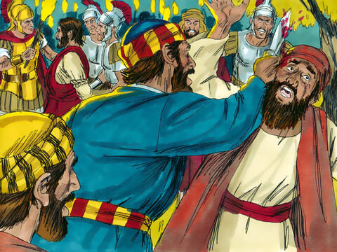

Betrayal And Arrest Of Lord Jesus
And while he yet spake, lo, Judas, one of the twelve, came, and with him a great multitude with swords and staves, from the chief priests and elders of the people.
Now he that betrayed him gave them a sign, saying, Whomsoever I shall kiss, that same is he: hold him fast.
And forthwith he came to Jesus, and said, Hail, master; and kissed him.
And Jesus said unto him, Friend, wherefore art thou come? Then came they, and laid hands on Jesus and took him.
And, behold, one of them which were with Jesus stretched out his hand, and drew his sword, and struck a servant of the high priest's, and smote off his ear.
Then said Jesus unto him, Put up again thy sword into his place: for all they that take the sword shall perish with the sword.
Thinkest thou that I cannot now pray to my Father, and he shall presently give me more than twelve legions of angels?
But how then shall the scriptures be fulfilled, that thus it must be?
In that same hour said Jesus to the multitudes, Are ye come out as against a thief with swords and staves for to take me? I sat daily with you teaching in the temple, and ye laid no hold on me.
But all this was done, that the scriptures of the prophets might be fulfilled. Then all the disciples forsook him, and fled.
Matthew 26:47-56
- 